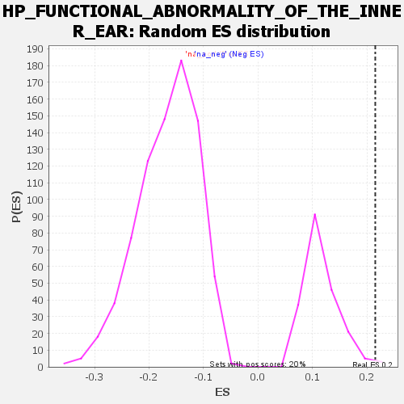

| | | Dataset | genes_ranked_stat_0.1 |
| Phenotype | NoPhenotypeAvailable |
| Upregulated in class | na_pos |
| GeneSet | HP_FUNCTIONAL_ABNORMALITY_OF_THE_INNER_EAR |
| Enrichment Score (ES) | 0.2151844 |
| Normalized Enrichment Score (NES) | 1.8457291 |
| Nominal p-value | 0.014778325 |
| FDR q-value | 0.30353037 |
| FWER p-Value | 0.907 |
Table: GSEA Results Summary
 Fig 1: Enrichment plot: HP_FUNCTIONAL_ABNORMALITY_OF_THE_INNER_EAR
Fig 1: Enrichment plot: HP_FUNCTIONAL_ABNORMALITY_OF_THE_INNER_EAR
Profile of the Running ES Score & Positions of GeneSet Members on the Rank Ordered List
| SYMBOL | RANK IN GENE LIST | RANK METRIC SCORE | RUNNING ES | CORE ENRICHMENT | | 1 | DDB2 | 48 | 3.185 | -0.0283 | Yes |
| 2 | SOX10 | 49 | 3.173 | -0.0051 | Yes |
| 3 | EPAS1 | 104 | 2.793 | -0.0427 | Yes |
| 4 | IFT88 | 106 | 2.791 | -0.0234 | Yes |
| 5 | ZIC1 | 109 | 2.768 | -0.0054 | Yes |
| 6 | RPE65 | 116 | 2.732 | 0.0082 | Yes |
| 7 | TIMMDC1 | 118 | 2.725 | 0.0270 | Yes |
| 8 | KCNQ2 | 132 | -2.735 | 0.0330 | Yes |
| 9 | MEOX1 | 160 | -2.766 | 0.0242 | Yes |
| 10 | GATA2 | 173 | -2.790 | 0.0317 | Yes |
| 11 | ENPP1 | 193 | -2.806 | 0.0318 | Yes |
| 12 | PDGFB | 194 | -2.807 | 0.0523 | Yes |
| 13 | FOXH1 | 200 | -2.811 | 0.0674 | Yes |
| 14 | GP1BA | 231 | -2.845 | 0.0560 | Yes |
| 15 | COL4A3 | 247 | -2.859 | 0.0607 | Yes |
| 16 | RET | 292 | -2.897 | 0.0346 | Yes |
| 17 | TRDN | 314 | -2.919 | 0.0334 | Yes |
| 18 | PAX3 | 315 | -2.919 | 0.0547 | Yes |
| 19 | KYNU | 322 | -2.930 | 0.0697 | Yes |
| 20 | GABRB3 | 334 | -2.943 | 0.0793 | Yes |
| 21 | MYO7A | 336 | -2.947 | 0.0998 | Yes |
| 22 | DVL1 | 338 | -2.951 | 0.1203 | Yes |
| 23 | UNC13D | 339 | -2.952 | 0.1418 | Yes |
| 24 | PDZD7 | 342 | -2.956 | 0.1612 | Yes |
| 25 | TPRN | 346 | -2.960 | 0.1796 | Yes |
| 26 | COL13A1 | 402 | -3.048 | 0.1428 | Yes |
| 27 | NEFL | 408 | -3.059 | 0.1598 | Yes |
| 28 | ADA2 | 420 | -3.081 | 0.1705 | Yes |
| 29 | GJB2 | 433 | -3.109 | 0.1803 | Yes |
| 30 | SLC5A5 | 439 | -3.118 | 0.1977 | Yes |
| 31 | TTN | 469 | -3.169 | 0.1897 | Yes |
| 32 | SLC52A2 | 476 | -3.185 | 0.2065 | Yes |
| 33 | FHL2 | 500 | -3.213 | 0.2053 | Yes |
| 34 | TYMP | 546 | -3.320 | 0.1812 | Yes |
| 35 | DKK1 | 548 | -3.323 | 0.2044 | Yes |
| 36 | MYH14 | 566 | -3.370 | 0.2107 | Yes |
| 37 | GLI3 | 586 | -3.408 | 0.2152 | Yes |
| 38 | ANKH | 637 | -3.532 | 0.1873 | No |
| 39 | MLXIPL | 734 | -3.872 | 0.1124 | No |
| 40 | P4HA2 | 868 | -4.282 | 0.0008 | No |
| 41 | NKX2-5 | 891 | -4.421 | 0.0095 | No |
| 42 | TLR4 | 939 | -4.898 | -0.0052 | No |
| 43 | SEMA3C | 960 | -5.567 | 0.0140 | No |
Table: GSEA details [plain text format]

Fig 2: HP_FUNCTIONAL_ABNORMALITY_OF_THE_INNER_EAR: Random ES distribution
Gene set null distribution of ES for HP_FUNCTIONAL_ABNORMALITY_OF_THE_INNER_EAR